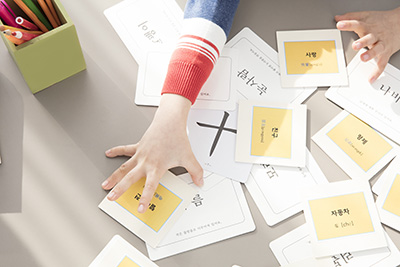
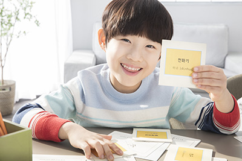

-
우리는 마음을 기울입니다
- 더 많을 것을 주려고 노력하기보다 더 많은 것을 끌어 내려고 노력합니다.
- 무엇을 가르칠까? 무엇을 줄까? 를 고민하기보다 무엇을 발견하는지? 무엇을 깨닫는지에 마음을 기울입니다.
- 답을 주기보다 궁금함을 줍니다.
- 아이들의 생각을 궁금해하고 그 생각을 존중합니다.
-

-
성장하는 아이들은 행복합니다
- 스스로 판단하고 결정하는 주도적인 삶의 경험
- 민감함과 호기심으로 창의적인 생각을 공유하는 협력 경험
- 상상하고 시도하며 확인하는 참된 배움 경험
- 몰입하고 도전하는 희열을 경험
-

놀이로 이루어지는 진지한 경험으로 아이들은 놀라운 성장을 보여줍니다.
이렇게 성장하는 아이들은 즐거움을 넘어선 행복을 경험합니다